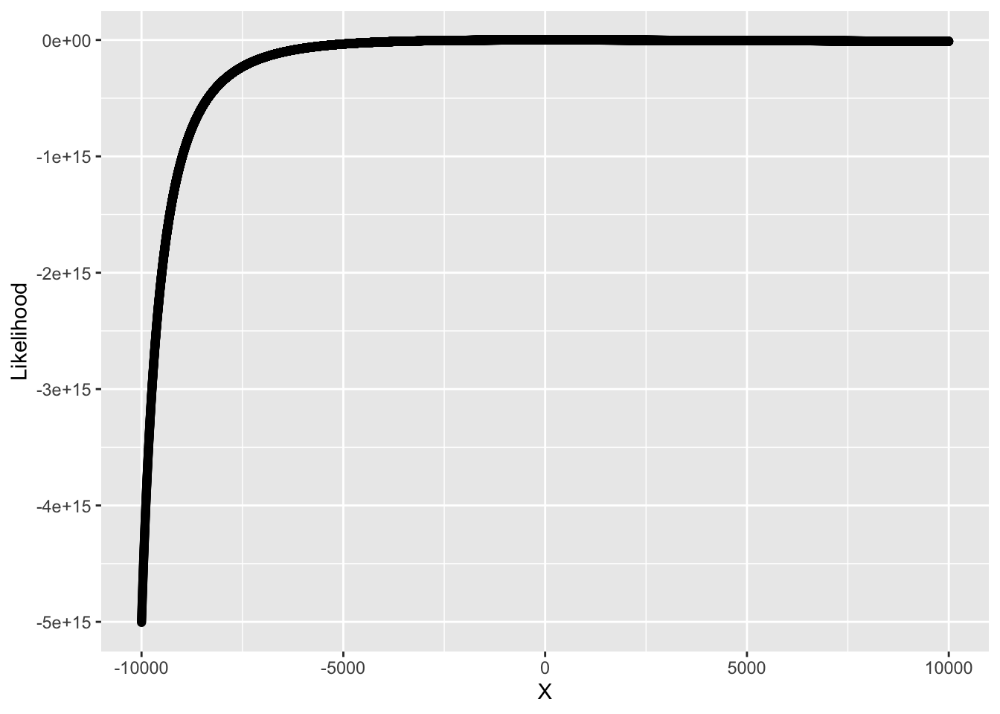
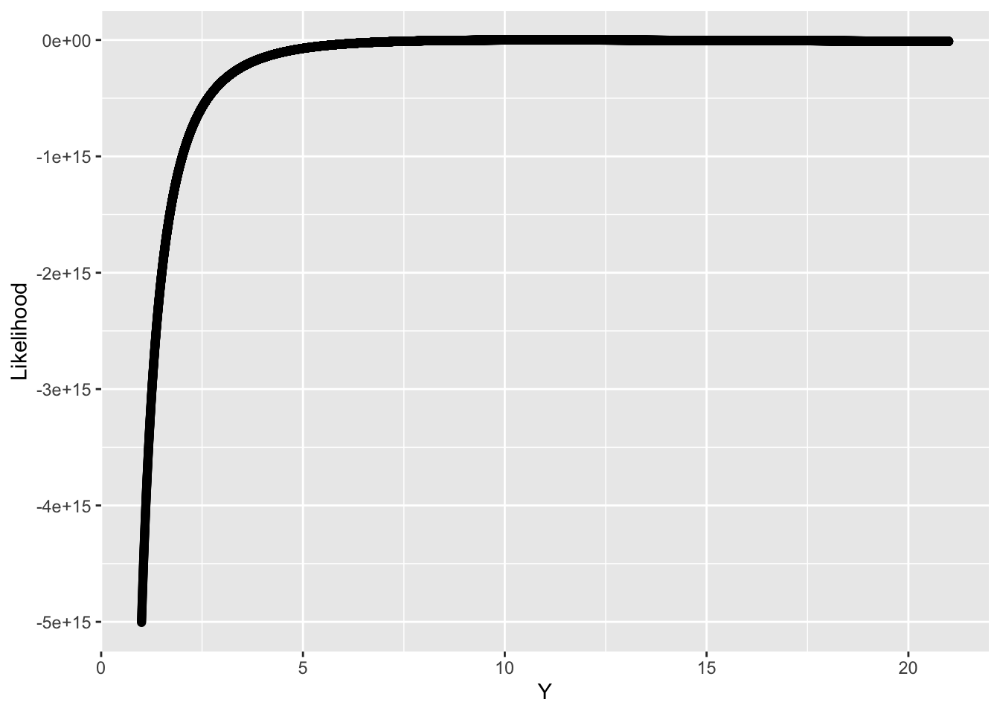

The Normal Distribution, denoted by \(\text{N}(\mu, \sigma^2)\) has PDF \(f(x|\mu, \sigma^2) \equiv \frac{1}{\sigma \sqrt{2\pi}}e^{-\frac{1}{2\sigma^2}(x-\mu)^2}\) for \(\mu \in (-\infty, \infty)\), \(\sigma^2 \in (-0, \infty)\) and \(x \in \mathbb{R}\).
First Moment
\[\begin{align*}
E[X] &= \int_{-\infty}^{\infty} x \frac{1}{\sigma \sqrt{2\pi}}e^{-\frac{1}{2\sigma^2}(x-\mu)^2} dx\\
&= \frac{1}{\sigma \sqrt{2\pi}}
\int_{-\infty}^{\infty} x e^{-\frac{1}{2\sigma^2}(x-\mu)^2} dx\\
\end{align*}\]
Let, \[\begin{align*}
z &= \frac{x-\mu}{\sigma} \\
\implies x &= \sigma z + \mu \\
\implies dx = \sigma dz
\end{align*}\]
\[\begin{align*}
\therefore E[X] &= \frac{1}{\sigma \sqrt{2\pi}} \int_{-\infty}^{\infty} (\sigma z + \mu)e^{-\frac{\sigma z + \mu - \mu}{2\sigma^2}} dz\\
&= \frac{1}{\sqrt{2\pi}} \int_{-\infty}^{\infty} (\sigma z + \mu) e^{-\frac{z^2}{2}}dz\\
&= \frac{1}{\sqrt{2\pi}}\left [\int_{-\infty}^{\infty} \sigma z e^{-\frac{z^2}{2}} + \int_{-\infty}^{\infty} \mu z e^{-\frac{z^2}{2}}dz \right]
\end{align*}\]
Now, \(\int_{-\infty}^{\infty} z e^{-\frac{z^2}{2}} dz= 0; \quad\) Since, this is an odd function.
and, \(\int_{-\infty}^{\infty} e^{-\frac{z^2}{2}} dz= 2\int_{0}^{\infty} e^{-\frac{z^2}{2}}dz; \quad\) Since, this is an even function.
set.seed(20220919)sampleNorm <-rnorm(n =10000, mean =5, sd =2)
What is the log-likelihood of \(p\)?
lNorm <-function(mu, sigma, k) { (length(k) *log(1/(sqrt(2* pi)))) - ((length(k)/2) *log(sigma^2)) - ((sum(k - mu)^2) / (2* sigma^2))}# Range of mu's and sigma'smuDomain <-seq(from =-10000, to =10000, by =1) sigmaDomain <-seq(from =1, to =21, by =0.001) # log-Likelihood is the log-sum of the PDFs for all values of klikelihoods_num <-map2_dbl(.x = muDomain,.y = sigmaDomain,.f =~{lNorm(mu = .x, sigma = .y, k = sampleNorm) })
Let’s plot it:
resNorm_df <-tibble(X = muDomain, Y = sigmaDomain, Likelihood = likelihoods_num)ggplot(data = resNorm_df) +aes(x = X, y = Likelihood) +geom_point()

ggplot(data = resNorm_df) +aes(x = Y, y = Likelihood) +geom_point()

What is the maximum likelihood for \(\mu\) and \(\sigma\)?
For this seed, the MLE of \(\mu\) is 5 and \(\sigma\) is 10.005 via simulation. However, the closed form solution of these MLEs are \(\frac{1}{n} \sum_i k_i = \bar{k}\) and \(\frac{1}{n} \sum_i (k_i-\mu)^2\) which are